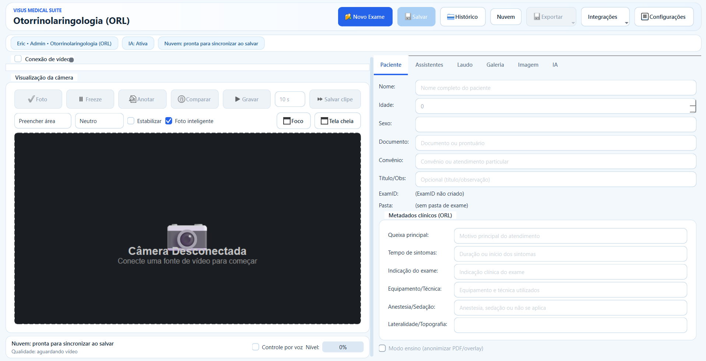
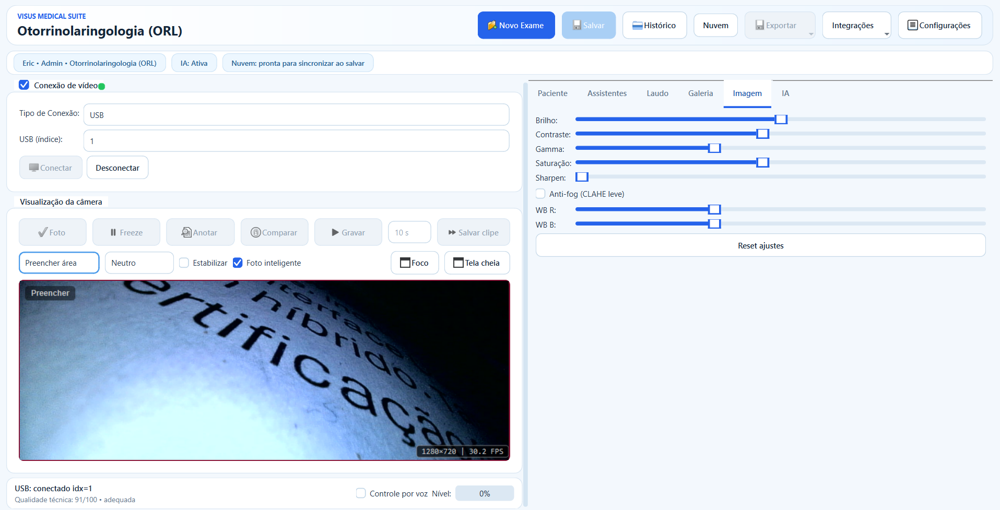
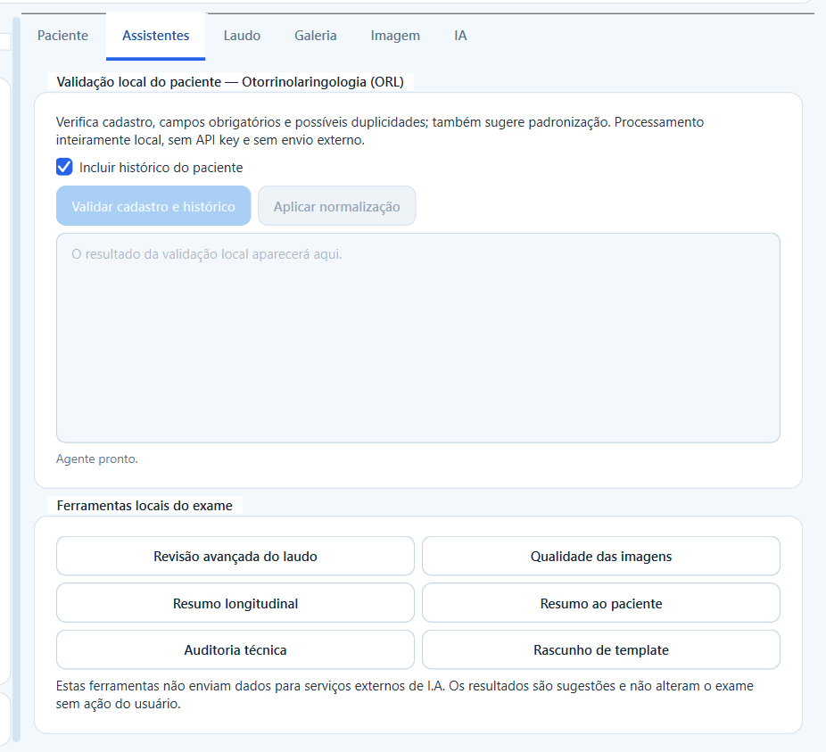

Vídeo, foto e clipes
USB, HTTP Snapshot e MJPEG; foto, freeze, gravação, clipes de 10, 20 ou 30 segundos, marcação de momentos, áudio e miniaturas.
O Visus Medical Suite reúne vídeo ao vivo, documentação clínica, análise visual e laudos em uma estação de trabalho desenvolvida para acompanhar o exame do início ao fim.

Da identificação do paciente à entrega do laudo, cada etapa permanece conectada ao exame. O Visus organiza fotos, vídeos, dados clínicos, análises e documentos em um ambiente local com histórico e rastreabilidade.
Conecte câmera USB, fonte HTTP Snapshot ou fluxo MJPEG. Ajuste a imagem, congele o quadro, registre fotos e grave vídeos contínuos ou clipes dos últimos segundos.

Recursos organizados por etapa para que a equipe encontre a ferramenta certa durante e depois do exame.
USB, HTTP Snapshot e MJPEG; foto, freeze, gravação, clipes de 10, 20 ou 30 segundos, marcação de momentos, áudio e miniaturas.
Zoom, pan, imagens coloridas ou monocromáticas, inversão, marcação de achados e relatório independente em PDF.
Compare imagens do exame atual e anteriores do mesmo paciente, com diferenças, mapa térmico, histogramas e métricas técnicas.
Fotos, vídeos, clipes, áudio, imagens anotadas, melhores frames, seleção múltipla e agrupamento de semelhantes.
Campos por especialidade, seções, observações, frases de normalidade, revisão crítica e modelos personalizados.
Validação local, qualidade de imagens, resumo longitudinal, sugestão de modelo, estruturação de notas e revisão do laudo.
Prévia do laudo, imagens selecionadas, QR Code, versão anonimizada, assinatura manual ou digital quando configurada, JSON e ZIP protegido.
Pacientes, retornos, busca de exames, central de dados, gráficos, qualidade dos registros e exportação CSV, PNG e PDF.
Dados separados por conta, auditoria, integridade por hash, backup, migração controlada e fila offline de metadados.
O Visus adota uma abordagem de trabalho inspirada no conceito ISR — Intelligence, Surveillance and Reconnaissance — conhecido em tecnologia militar: observar o sinal, registrar evidências visuais e revisá-las com contexto. Na aplicação clínica, isso se traduz em captura organizada, comparação técnica de imagens e rastreabilidade do exame.
ISR descreve aqui uma referência de método. O software não é apresentado como equipamento militar, nem produz diagnóstico automático.
Os formulários adaptam campos, achados e frases de normalidade ao procedimento selecionado.
Assistentes locais verificam cadastro, consistência do laudo, qualidade técnica de imagens e histórico. Com configuração e consentimento, a IA externa pode sugerir modelos, estruturar notas e propor texto para revisão do profissional.

Exames, retornos, mídias, revisões e trilha de eventos reunidos por paciente.
Metadados, manifesto SHA-256, escrita atômica e backup configurável.
Dados separados por UID, opção de ocultar nomes e modo de ensino anonimizado.
A rotina permanece local; a fila sincroniza metadados elegíveis. Upload de arquivos clínicos está desativado por padrão.
Converse sobre sua especialidade, fonte de vídeo e fluxo de documentação. A apresentação pode mostrar as ferramentas do software no contexto da sua rotina.
Solicitar apresentação